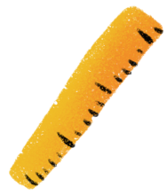

Laisser
Laisser
sa trace
Antoine et Sarah ont mis un peu de craie sur leur main si bien que lorsqu’ils ont sauté ils ont pu laisser une trace sur le mur. Cela permet de savoir qui a sauté le plus haut sans même avoir à mesurer.
Pour cela il suffit de comparer la hauteur des traces.
Mais ce n’est pas très juste pour les personnes plus petites ou qui ont de petites mains.
C’est pour cela qu’il faut d’abord laisser la trace de la main sans sauter et ensuite mesure la distance entre les deux traces de main : celle obtenu au repos et celle obtenue en sautant.